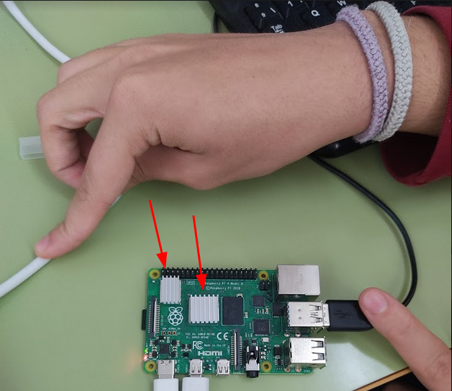

Hemos creado un diseño 3D de la carcasa para nuestra Raspberry.

Una vez tenemos el diseño hemos ido a imprimir la carcasa a la impresora 3d del centro.
Lo siguiente que haremos será colocar los disipadores de la Raspberry para que no se caliente y funcione bien.
Una vez tengamos todas las partes impresas y los disipadores colocados, ya podremos encajar la carcasa en la Raspberry y enchufar todos los cables.